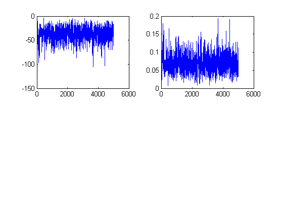
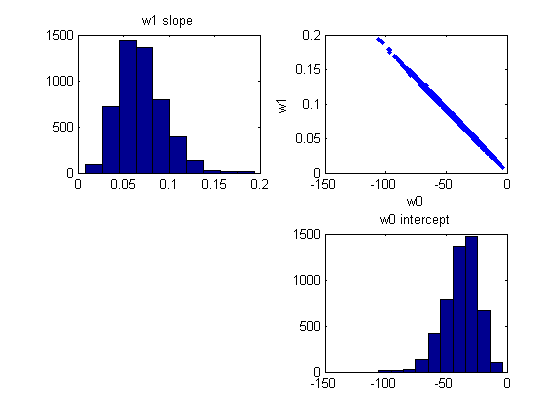
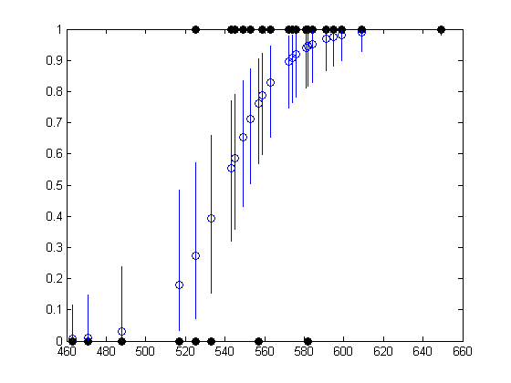
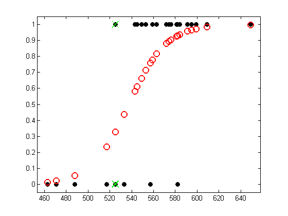

Metropolis Hastings Logistic Regression Demo
Example from Johnson and Albert p87
function [X, y, ws, perm] = logregGradeMH() [X,y] = satDataLoad; model = logregBinaryFitL2IRLS(X, y, 1e-8, false); w = model.w; C = model.C; % MH setSeed(1); xinit = w; Nsamples = 5000; lambda = 0; targetArgs = {X,y,lambda}; sigmaMH = 1.5; proposalArgs = {sigmaMH*C}; [ws, naccept] = metropolisHastings(@logpost, @proposal, xinit,... Nsamples, targetArgs, proposalArgs); % trace plots figure for i=1:2 subplot(2,2,i) plot(ws(:,i)) end % samples figure subplot(2,2,1) hist(ws(:,2)) title('w1 slope') subplot(2,2,2) plot(ws(:,1), ws(:,2), '.') xlabel('w0'); ylabel('w1') subplot(2,2,4) hist(ws(:,1)) title('w0 intercept') MLE = xinit postMean = mean(ws,1) postMedian = median(ws,1) % visualize model fit for each training point figure perm = sortidx(X(:, 2), 'ascend'); N = length(perm); for ii=1:N i = perm(ii); ps = 1 ./ (1+exp(-X(i,:)*ws')); % ps(s) = p(y=1|x(i,:), bs(s,:)) row vec plot(X(i,2), median(ps), 'o'); hold on h=plot(X(i,2), y(i), 'ko'); set(h,'markerfacecolor', 'k'); % prediction interval tmp = sort(ps, 'ascend'); Q5 = tmp(floor(0.05*Nsamples)); Q95 = tmp(floor(0.95*Nsamples)); line([X(i,2) X(i,2)], [Q5 Q95]); end logregSATdemo end %%%%%%%%% function bnew = proposal(w, Sigma) model.mu = zeros(1, length(w)); model.Sigma = Sigma; bnew = w + gaussSample(model); end function p = logpost(w, X, y, lambda) mu = 1 ./ (1 + exp(-X*w(:))); p = sum( (y.*log(mu) + (1-y).*log(1-mu))) + lambda/2*sum(w.^2); end
MLE = -31.114577531965772 0.057849374443508 postMean = -37.726703055546750 0.069894755228971 postMedian = -36.159511818465518 0.067114270542568 ans = 525 533 545 582 581 576 572 609 559 543 576 525 574 582 574 471 595 557 557 584 599 517 649 584 463 591 488 563 553 549   